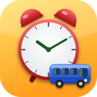
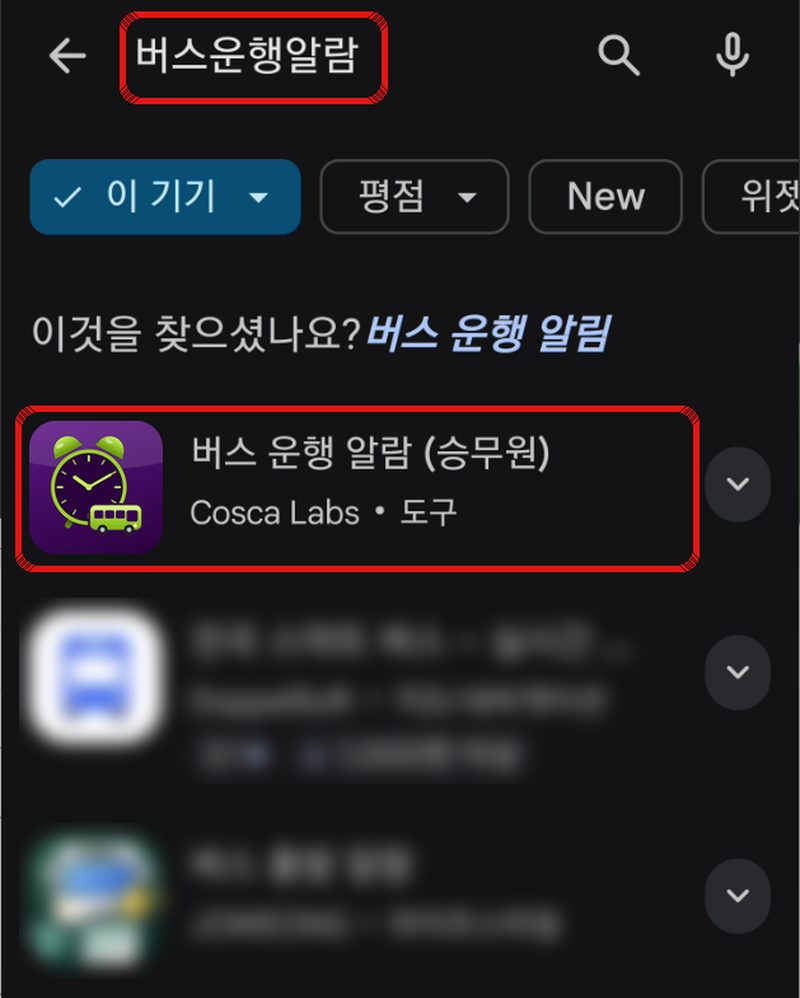
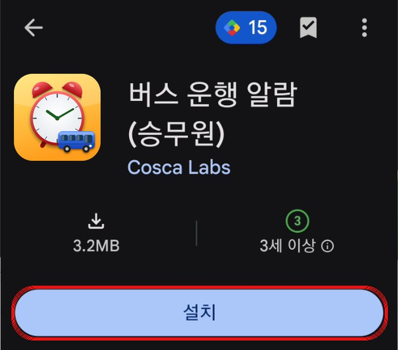
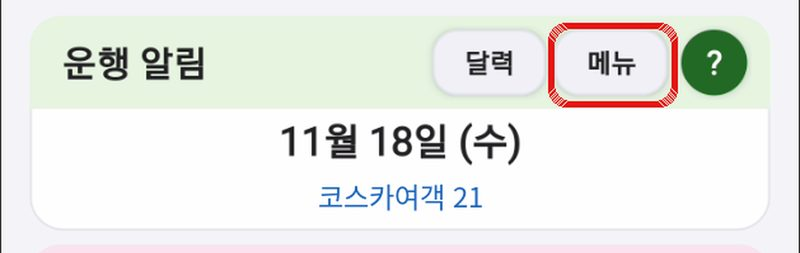
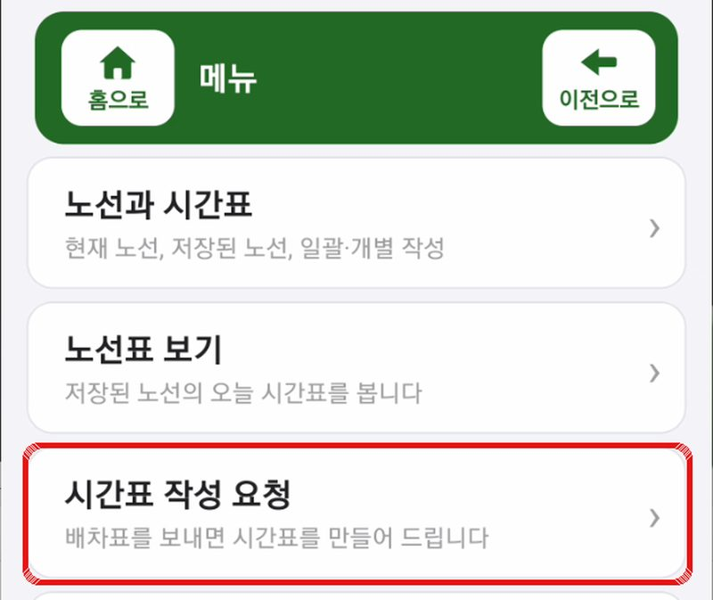
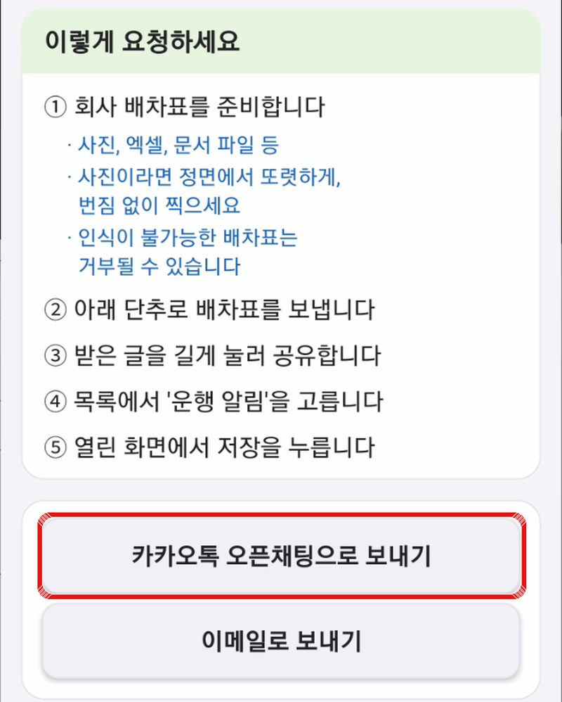
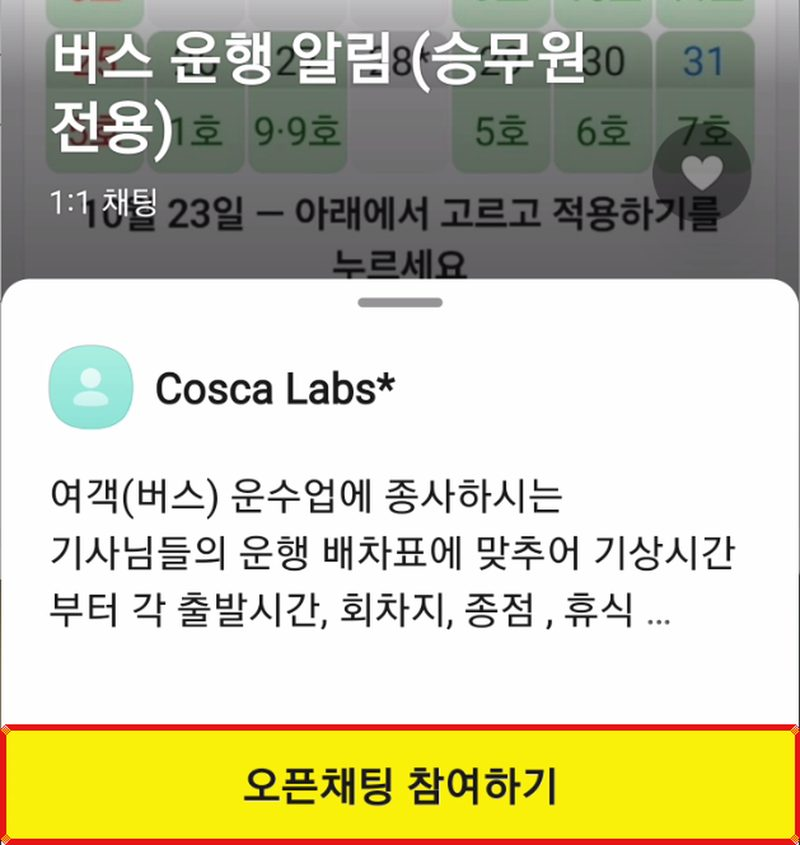
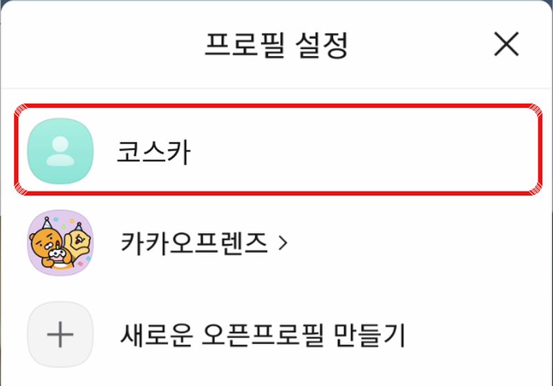

회사 배차표에 맞춰 기상 시간부터 회차별 출발, 중간 알림까지 울려 주는 승무원 전용 앱입니다.
플레이스토어에서 설치하기플레이스토어에서 '버스운행알람'을 검색하고, 이 아이콘의 '버스 운행 알람 (승무원)'을 누르세요. 위의 초록 단추를 누르면 이 단계 없이 바로 2번 화면이 열립니다.

'설치'를 누르세요.

설치가 끝나면 앱을 열고 맨 위의 '메뉴'를 누르세요.

메뉴에서 '시간표 작성 요청'을 누르세요.

'카카오톡 오픈채팅으로 보내기'를 누르세요.

오픈채팅방이 열리면 맨 아래 '오픈채팅 참여하기'를 누르세요.

프로필을 고르는 창이 뜨면 쓰실 프로필을 고르세요. 그다음 바로 아래 빨간 칸에 적힌 것을 보내 주시면 시간표를 만들어 드립니다.

보내 주신 실명과 전화번호는 시간표를 만들기 전에 확인합니다.
안드로이드 휴대폰에서 쓰는 앱입니다. 궁금한 점은 앱의 메뉴 → 시간표 작성 요청에서 카카오톡 오픈채팅이나 이메일로 물어봐 주세요.